01 / HEADQUARTERS
Know what needs you next.
The recovery desk puts decisions, live work, and access proof in one view. Every row distinguishes a fictional sample case from a connected result.
Open full-size screenshot ↗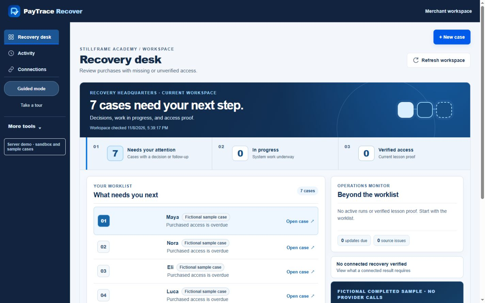
Twelve screenshots of the PayTrace Recover interface, from the merchant headquarters and evidence review to human approval, lesson verification, and the wider digital-orders workflow.
Fictional sample views. These screenshots show product behavior using scripted case records. They do not represent a connected PayPal payment, live model consultation, access grant, or completed external acceptance test.
Open any image at full resolution for a submission or presentation.
Download all 12 screenshots ↓The recovery desk puts decisions, live work, and access proof in one view. Every row distinguishes a fictional sample case from a connected result.
Open full-size screenshot ↗
Maya’s case brings the payment, course, missing access, and approval path together. The merchant can see the exact proposed correction before making a decision.
Open full-size screenshot ↗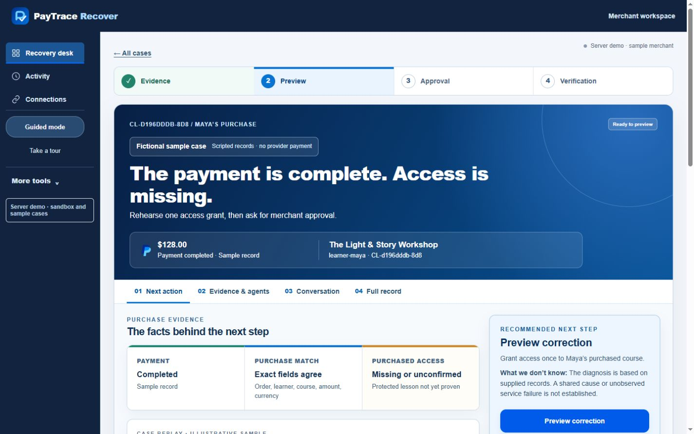
Ledger, Relay, Patch, and Prism each cite the records used, state what remains uncertain, and label evidence confidence as a qualitative assessment.
Open full-size screenshot ↗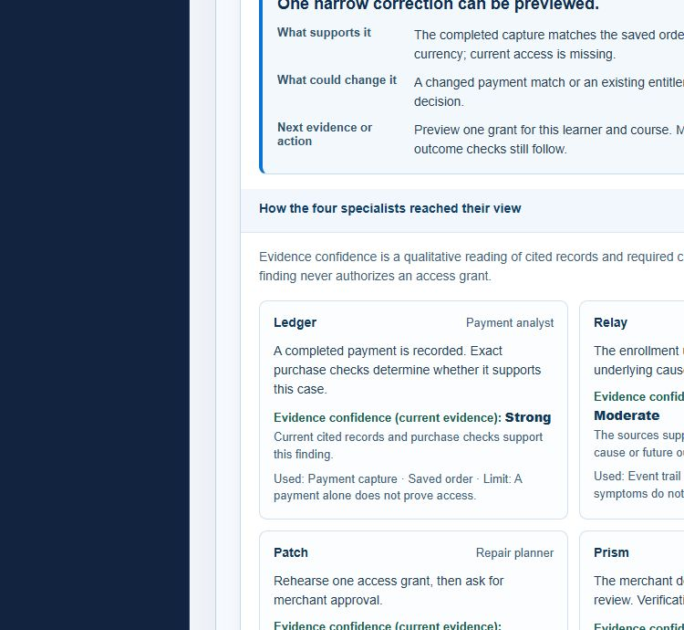
The guided investigation surfaces four records, six purchase checks, and each specialist’s bounded conclusion in one compact view.
Open full-size screenshot ↗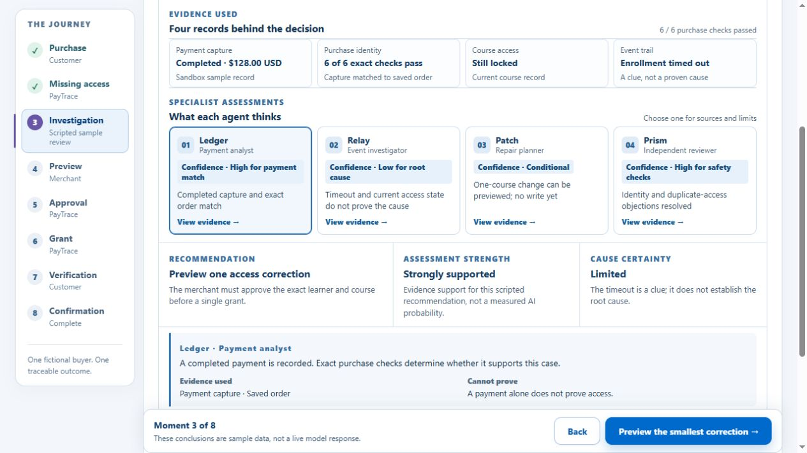
The public route introduces the payment gap, the evidence review, and the checked outcome before judges enter the working merchant desk.
Open full-size screenshot ↗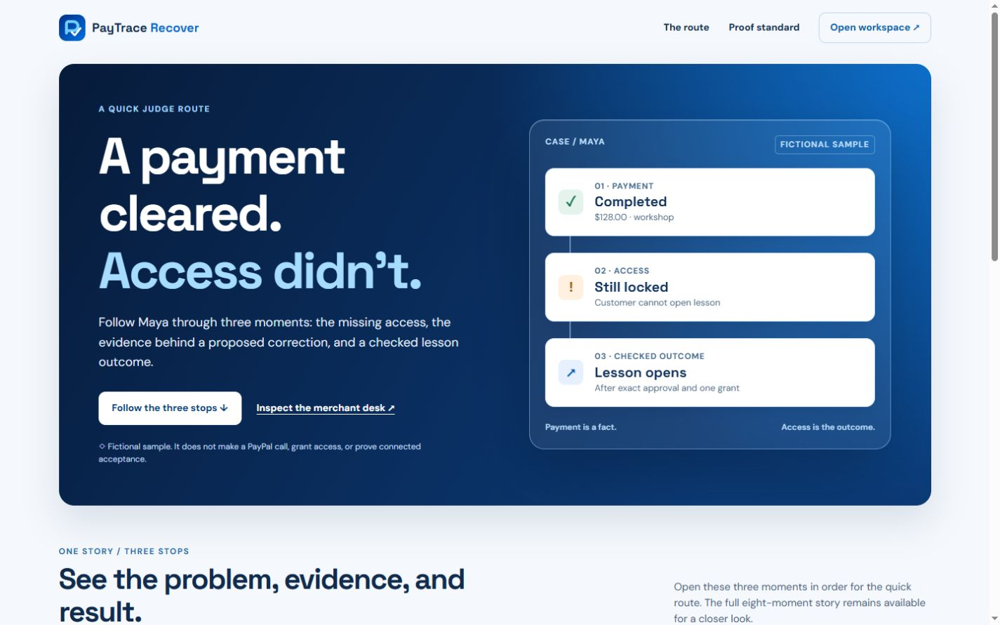
The merchant sees the one-learner, one-course correction. The preview explicitly says no entitlement has changed.
Open full-size screenshot ↗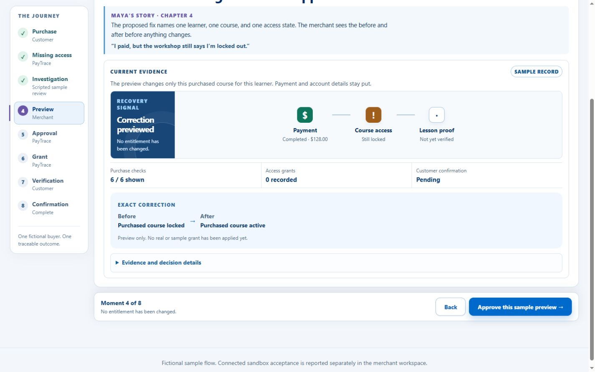
Approval is recorded for the specific preview. The screen makes clear that approval alone has not unlocked the lesson.
Open full-size screenshot ↗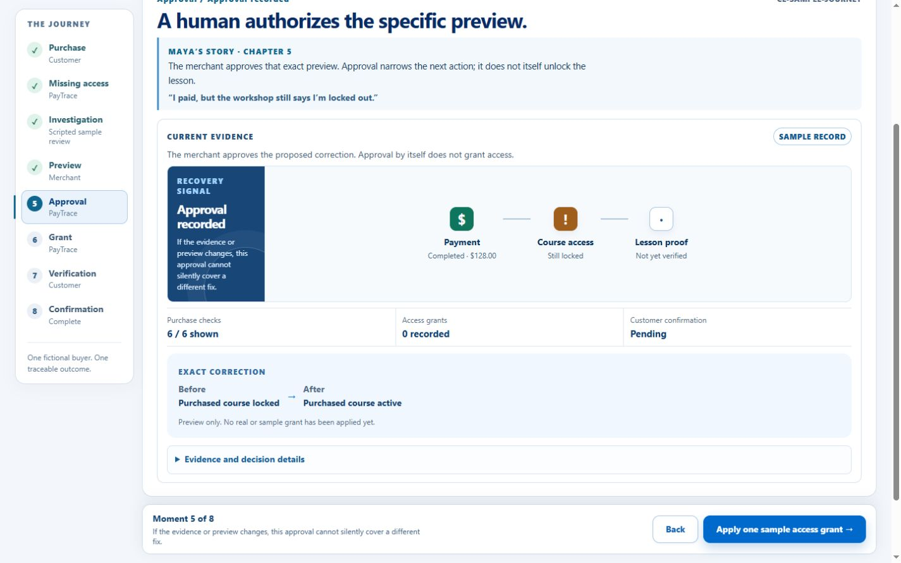
Technical proof reads the payment, entitlement, and protected lesson again. Maya’s own confirmation remains a separate signal.
Open full-size screenshot ↗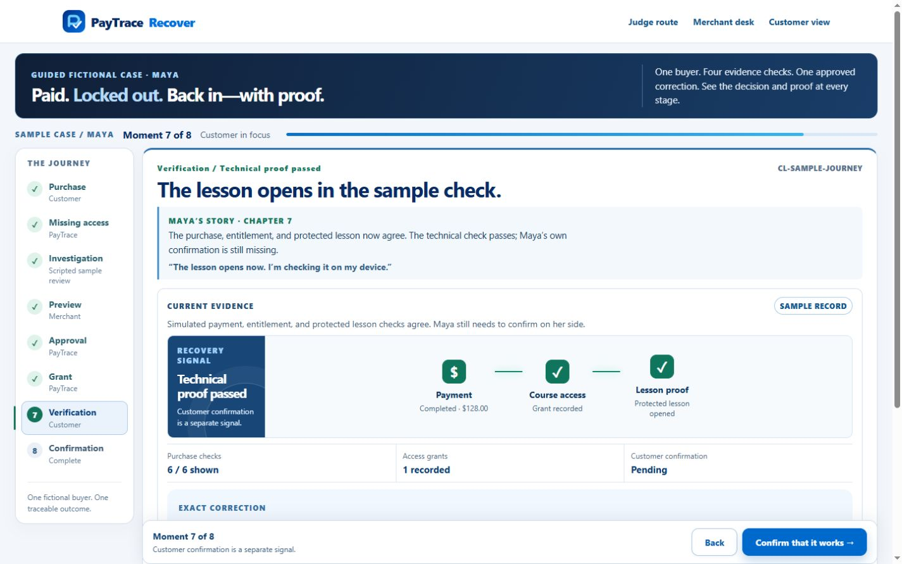
The service board separates setup checks from the milestones needed for a connected recovery. The unconfigured sandbox is labeled plainly.
Open full-size screenshot ↗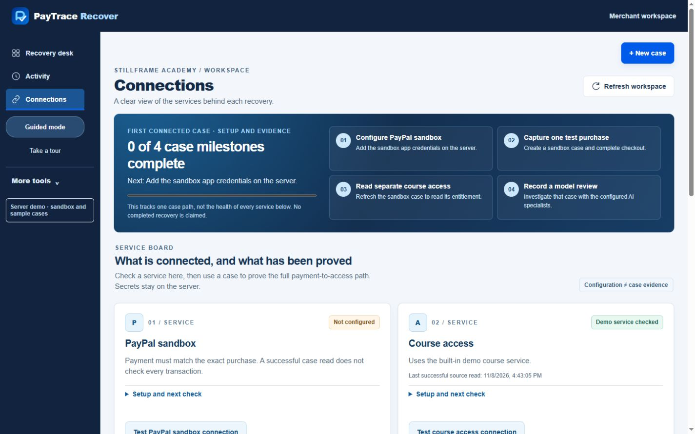
Searchable event history keeps payment, investigation, approval, and verification events linked to their cases.
Open full-size screenshot ↗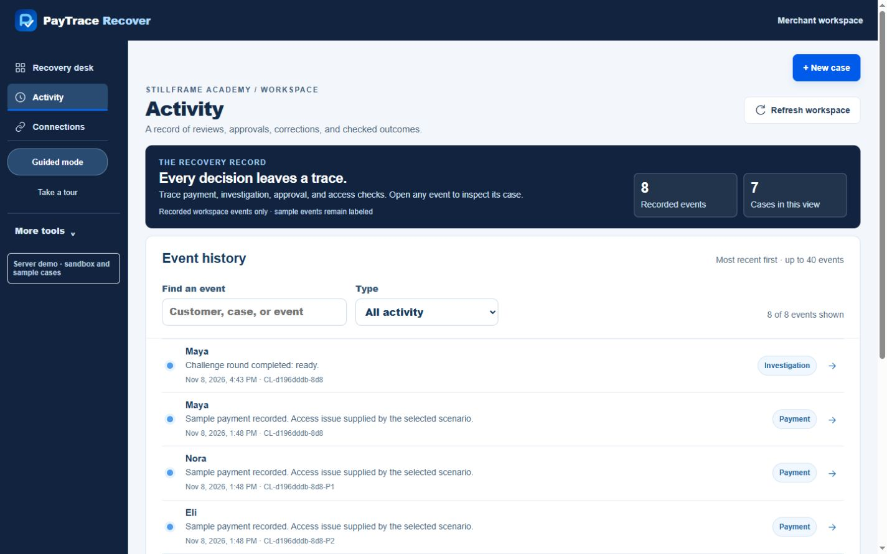
A fictional software-license case shows how exact purchase matching, a narrow correction, and proof of delivery extend to digital orders.
Open full-size screenshot ↗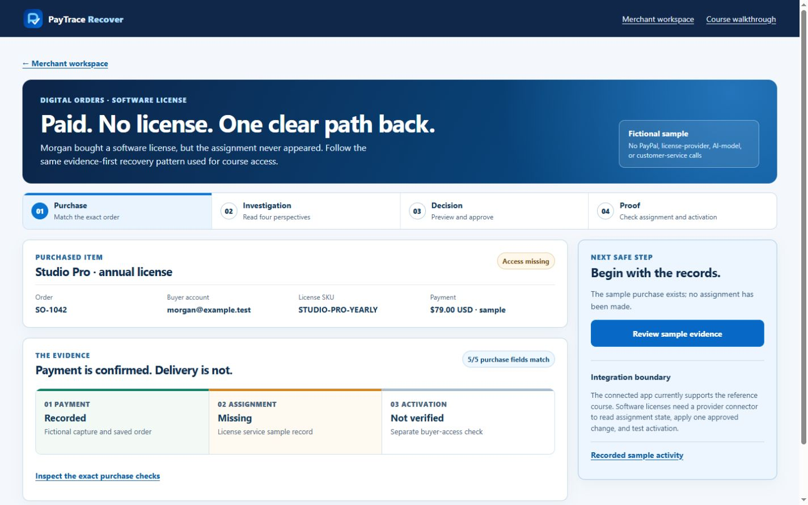
The sample ends after one recorded grant, a protected-lesson check, and Maya’s separate confirmation. The interface keeps this scripted outcome distinct from connected acceptance.
Open full-size screenshot ↗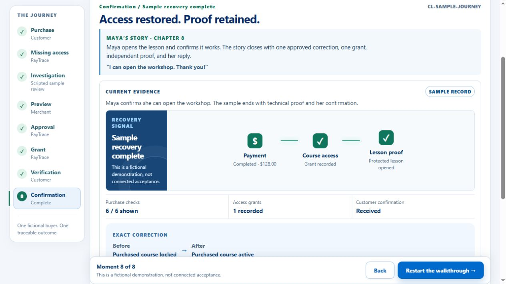
Start with the short judge route, then open the working merchant desk and inspect the evidence.